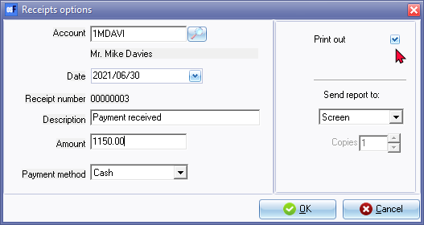
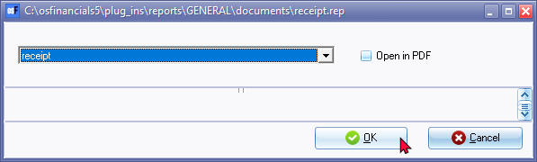
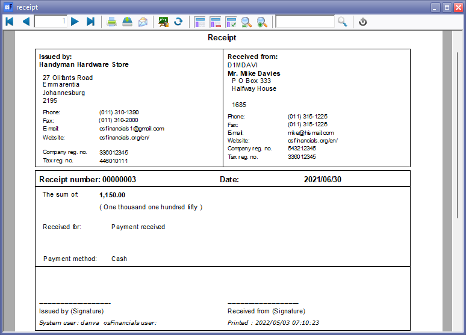
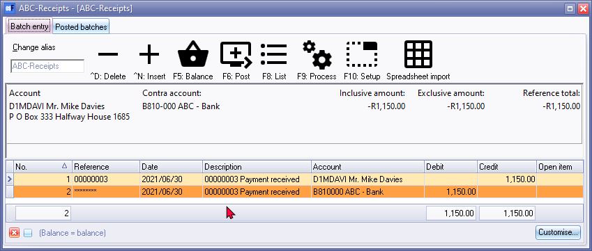
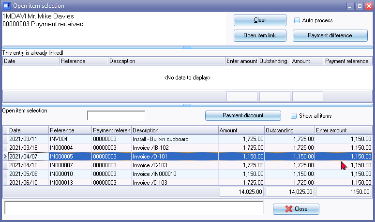

Create receipts (Receipt batches)
Normally you would write out a receipt in a receipt book, and then enter the details of the hand-written receipt in the receipt batch.
You may create a receipt from a receipt batch, print it out and hand it to a customer or the party from which you have received payment. A receipt will automatically be generated and the transaction for the receipt will automatically be entered in the selected Receipts journal.
To create a receipt:
- On the Default ribbon, select Batch entry (F2).
- Select the Receipts journal.
|
|
Should you have more than one Bank account, you need to make sure that you select the correct Receipts journal for the Bank account into which you are going to deposit the payment received. |

- Click on the Open button. The Batch entry screen for the selected Receipts journal will be displayed.
- Enter the Alias (batch name) and press the Enter key, if necessary.
- Click on the F9: Process icon. The Process the batch options screen will be displayed.
- Select the Create receipts option, and click on the OK button. The "Edit receipts options" screen is displayed:

- Enter and select the following options:
- Account - Select the Account to which you wish to allocate the moneys received from the Accounts lookup facility. Usually it would be a Debtor account for which the money is received. In some cases, it may also be a ledger account to be credited with the moneys received for cash (e.g. Sale of a Fixed Asset for cash).
- Date - The system date of your operating system will automatically be displayed in the date field. Enter the date or select the date, if necessary.
- Description - Enter the description, which you wish to be displayed on the receipt, as well as on the details of reports and on the debtor statements if applicable.
- Amount - Enter the amount in figures. You may enter up to Nine billion, nine hundred and ninety nine million, nine hundred and ninety nine thousand nine hundred and ninety nine (Rands, Euros, Pounds or Dollars) and ninety nine cents in this field (9,999,999,999.99).
|
|
If your system's digit separator id set to a comma and your system's Decimal symbol is set to a period, do not enter a comma as the decimal separator. If a comma is used as a digit separator, It will print and generate the transaction amount as 115,000.00 instead of 1,150.00. |

- Payment method - Select the payment method Cash, Cheque, Credit Card or Other.
- Print out - Select to print out or not to print the receipt in the print out field. If this field is left blank, no receipt will be printed, but the details of the receipt will generate a transaction in the batch entry screen.
- Send report to - Select Screen, Printer, File, E-mail or Fax to generate the receipt.
- Copies - Not implemented.
- Click on the OK button. The receipt will be sent to the medium you have selected in the Send report to field, provided that the "Print out" field is selected. Click OK on the "Report parameter" screen.

- An example of the printed "Receipt", is as follows:

|
|
To display the amount in words correctly on receipts, where the rules are different than in English or other languages, you need to select the Dutch text numbering option on Setup → System parameters (Setup ribbon). |

- The transaction for the receipt will automatically be inserted into the Receipts journal from which this option was initiated.
- Click on F5:Balance. An example, of the balanced batch, is as follows:

|
|
You may change the receipt number in the reference field to the deposit number on which the receipt is deposited. It is important to use the deposit number as reference number. If this is not done, you may find difficulties when matching the bank statement with the transactions in the Receipts journal when you finalise the bank reconciliation. |
|
|
Should the processing icons on the "Batch entry" screen is inactive during this process, you may need to close and reopen the batch. |
|
|
Open item debtor (customer / client) accounts If a debtor (customer / client) account were set as an Open item account, and when you edit or select a transaction. the "Open item selection" screen will be displayed. You may confirm or select a transaction to which you wish to apply the receipt.  |
|
|
Once you have finished entering / editing the transactions in the batch you need to: - |